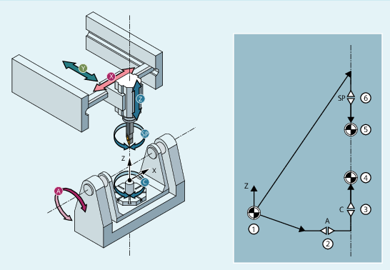

More information
Function
The rotary interpolation transformation TRAINT – also called interpolation turning – is used to provide users on a suitable machine tool (e.g. milling machine, turning machine with three linear axes) with the environment of a simple turning machine so that the NC commands and cycles function as on a turning machine.
Using the transformation, rotary motion is translated into circular movements of the linear axes. Correspondingly, the tool cutting edge is always aligned with the center of rotation during the motion. The rotary motion is not realized using an axis of rotation of the machine, but through traversing motion of the linear axes (x, y and z), which results in circular motion. This distinguishes interpolation turning from the "Turning on a milling machine" functionality.
The axis of rotation can be selected as the center of the turning operations and of the spindle at any mechanically accessible workpiece position and can be freely oriented in space for 4 or 5-axis machines.

| Notice |
Linear axes coupled to a tool spindleThe linear axes are coupled to the tool spindle during interpolation turning. A rotation of the spindle automatically results in motions of the linear axes. This is especially true if there is no path motion, the path motion is stopped due to G4, or the path override is set to 0. In contrast to a turning machine, an NC stop also stops the spindle motion. |
Machine kinematics as a kinematic chain
Interpolation turning is only implemented as transformation based on a kinematic chain.
The following conditions apply:
The axis of rotation is always parallel to the direction of the tool spindle (z axis when turning).
The axis of rotation can be freely oriented in space, for example with CYCLE800 or frames, but must remain fixed during the rotation.
Spindle direction and Z axis of the current WCS must be in parallel.
The center of the rotary interpolation transformation must lie in the current zero point of the WCS.
The rotation is translated into movements of the linear axes through the transformation. Correspondingly, the tool cutting edge is always aligned with the center of rotation during the motion.
CYCLE806 (this option requires a license)
CYCLE806 can also be used to program interpolation turning.
Tool length compensation
Directly after activating the transformation, the WCS position y must be equal to 0. Here it should be noted that without transformation the tool lengths in the BCS are used without taking the spindle position (i.e. the actual orientation of the tool) into account.
Without transformation, a difference between the tool tip and the WCS position therefore occurs when the tool is rotated (SPOS unequal to 0 or unequal to clamping angle). This must be corrected accordingly before TRAFOON (generally, y is then not equal to 0 in the WCS, so that after TRAFOON and taking into account the rotation of the tool y is equal to 0).
Variables $P_TRAINT_ROT_ANGLE and $P_TRAINT_SPOS_ANGLE support users in establishing the WCS position y equal to 0.
$P_TRAINT_ROT_ANGLE:
The $P_TRAINT_ROT_ANGLE variable reads the correct frame rotation for selection of the transformation TRAINT.
$P_TRAINT_SPOS_ANGLE:
Variable $P_TRAINT_SPOS_ANGLE reads the correct position of the spindle for selection of transformation TRAINT.
Velocity control
On a turning machine, the total motion is the result of the rotary motion by the turning spindle and the path motion by the geometry axes X and Z. An axis of the path motion has no influence on the rotary motion and vice versa. This independence does not exist with interpolation turning. The machine axes X, Y and Z provide both rotational and path motion.
You can set the weighting of the shares via machine data (value range 0.001 to 0.999).
More information: Function Manual Transformations
Example of kinematics
A 5-axis milling machine in AC table kinematics is shown in the following example.
① | World coordinate system |
② | Rotary axis A |
③ | Rotary axis C |
④ | Workpiece reference point (end of the part chain) |
⑤ | Tool reference point (end of the tool chain) |
⑥ | Spindle |